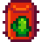

Oásis da Sandy

Sementes de Cacto
Só podem ser criados em ambientes fechados. Levam 12 dias para amadurecer, depois produzem frutos a cada 3 dias.
mais...
De
 150 moedas por
100 moedas
150 moedas por
100 moedas

Sementes de Beterraba
Plante-as no outono. Demoram 6 dias para crescer.
mais...

Sementes de Carambola
Plante-as no verão. Demoram 13 dias para crescer.
mais...